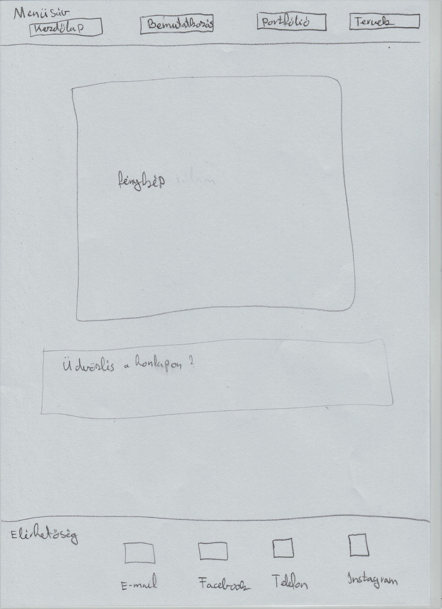
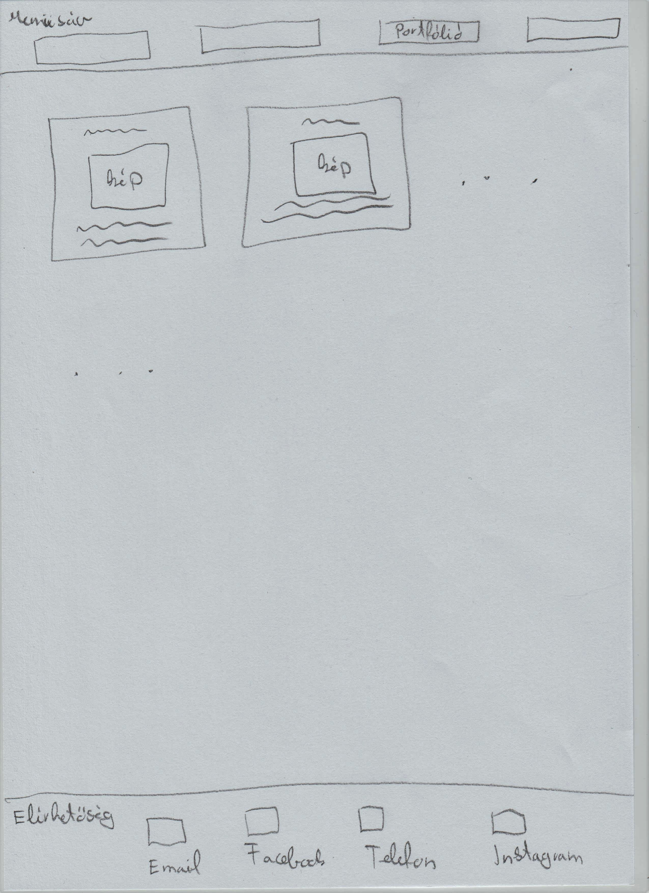
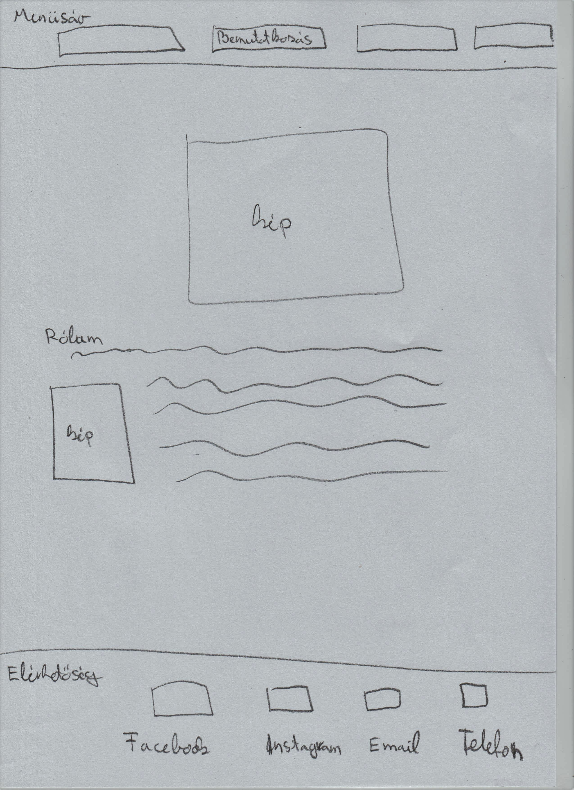

Tervek:




Nehézségek:
Az elején problémám volt azzal, hogy a képek és az oldal nem töltöttek be, de szerencsére megtaláltam a hibát, miszerint pontosítanom kellett a mappameghatározást. A bemutatkozás részhez nem teljesen tudtam hogy mit is kéne írnom, mikor egyik barátnőm mondta hogy nem nézik a szöveget azoknál, ezért 'lorem'-et használtam, ezzel viszont változtatnom kellett a kinézetén kicsit az oldalnak. Akartam csinálni egy személyes információk részt, de ezt úgy döntöttem kihagyom, így ennek a része egy kicsit megváltozott. Az elején tudtam hogy akarok kapcsolatokat rakni, elérhetőséget, de nem tudtam hova ezért felkerestem néhány oldalt és onnan jött az ötletem, hogy legyen alul, hiszen a legtöbbnél amit felkerestem az oldal alján voltak az elérhetőségek. Az elérhetőségi ikonokon is változtattam végül, hogy inkább egymás mellé kerüljenek az azonos jellegű kapcsolatok(mint például a Facebook és az instagram).
A színválasztással is voltak gondjaim, Kedvenc színem a lila, ezért természetesen próbáltam valami ahhoz hasonlóban gondolkodni, de mégis olyan arányban, hogy ne legyen túlzás és esztétikailag is össze passzoljanak a színek. Próbáltam változatossá de ugyanakkor felhasználó-baráttá tenni az oldalt. A terveim elég vázlatszerűek, elég elnagyoltak lettek, nem nagyon szoktam előre eltervezni az ilyesmit, a legtöbb dolgot a kód írása közben gondoltam ki. Nagyjából ezekkel küzdöttem a weblap elkészítése közben.
Felhasznált oldalak:
https://fonts.google.com/specimen/Roboto?sidebar.open=true&selection.family=Roboto:ital,wght@1,100
https://www.w3schools.com/html/
https://www.w3schools.com/colors/colors_mixer.asp?colorbottom=FFC0CB&colortop=FFFFFF
https://css3gen.com/box-shadow/
https://www.facebook.com/georgina.csepany/photos_all
https://www.google.com/ (Elérhetőséghez a logókról képet itt kerestem)